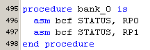
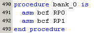
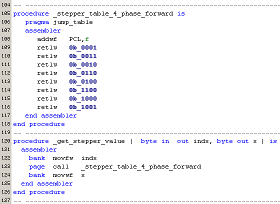
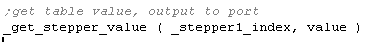
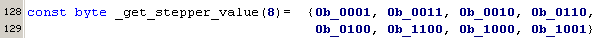
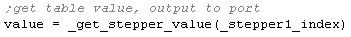
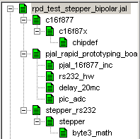
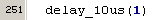
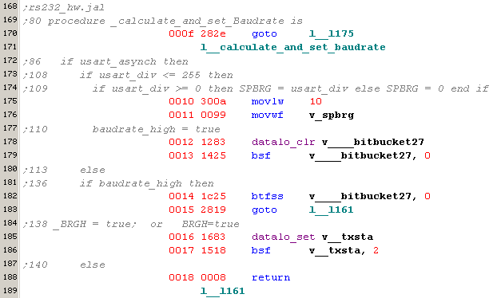

April 2006
Migration to JAL v2
Major changes JAL v2
Known bugs / issues
Performance Comparison JAL <--> pJAL
|
|
CodeSize |
RamSize |
Stack |
||||
|
JAL(1) |
JAL(2) |
pJAL |
JAL |
pJAL |
JAL |
pJAL |
|
|
pJAL_RS232_hw |
|
253 |
96 |
16 |
9 |
5 |
2 |
|
pJAL_delay |
|
604 |
319 |
17 |
10 |
5 |
2 |
|
pJAL_ADC |
|
436 |
210 |
18 |
13 |
5 |
2 |
|
pJAL_prog_data_mem |
|
647 |
459 |
22 |
21 |
5 |
2 |
|
pBJT |
|
477 |
223 |
30 |
20 |
3 |
2 |
|
pJAL_pwm |
|
611 |
318 |
29 |
24 |
5 |
3 |
|
pJAL_I2C |
|
1137 |
433 |
39 |
27 |
6 |
4 |
|
pJAL_LCD |
|
1264 |
844 |
45 |
42 |
5 |
5 |
|
|
|
|
|
|
|
|
|
|
LED6 |
296 |
514 |
157 |
18 |
9 |
4 |
2 |
|
I2C |
454 |
716 |
361 |
28 |
21 |
4 |
4 |
|
LCD |
573 |
987 |
501 |
19 |
22 |
5 |
5 |
|
GP2D02 |
282 |
446 |
180 |
17 |
10 |
4 |
2 |
|
IR |
477 |
733 |
397 |
33 |
20 |
6 |
7 |
|
Joystick+Motor |
517 |
797 |
382 |
31 |
29 |
6 |
9 ?? |
|
PS2 |
282 |
436 |
159 |
23 |
8 |
6 |
4 |
|
US |
407 |
649 |
366 |
19 |
16 |
4 |
3 |
|
ProgMem |
338 |
492 |
298 |
21 |
18 |
4 |
2 |
|
Stepper |
1770 |
2572 |
1518 |
65 |
74 |
8 |
7 |
|
bittest suite |
317 |
561 |
229 |
16 |
4 |
4 |
2 |
JAL(1) = JAL 0.4.59, compiled for 16F628
JAL(2) = JAL 0.4.59, compiled for 16F877
pJAL = JAL 2.0
The above tests were all done on the Rapid Prototyping Board, with a 16F877 running at 20 MHz. So the programs were all tested with real hardware.
None of the new features of JAL were tested (except constant arrays).
Introduction
For an overview of the differences, you should first read "jaldiff.txt", available in the downlaod package.
In general it'll only be necessary to translate the device specific library file, like JPIC.JAL.
For more complex programs, the following important issues should be checked:
Besides these important issues there are some minor points, which are recognized and signaled by the compiler
And of course some code can be optimized and/or made more readible, by making use of the extended capabilities of pJAL.
Compiler switches
Not all compiler switches are listed in the jaldiff.text. Furthermore, for unknown resons, some compiler switches seems to work different on Windows or Linux.
"-pcode"
(default)
"-nopcode"
"-long-start"
if you want to use a bootloader (like Shane Tolmies), this switch assures that the program code start with a long jump at location 0x0000
"-d"
same as "-debug" ??
Volatile
In JAL "volatile" never worked. In pJAL it's fully functional as it should !!
Because all PIC registers as well as all the indivudal bits are declared volatile in the device library (e.g. JPIC.JAL), and the pJAL compiler supports implicit volatile inheritance, you should never worry about, nor use volatile. In JAL there was never a problem, because non-volatile optimization isn't implemented at all.
Assembler bits
For setting bits in inline assembler code, in JAL both constructs below where allowed, in pJAL only the construct on the right is allowed. This makes the code more robust, because statements like "asm bsf indf,RB0" (which were valid in JAL) are prevented. The disadvantage comes in when you copy complete code from an assembler program into pJAL, because in assembler mostly (or even only) the construct on the left is used.
|
JAL |
JAL / pJAL |
|
 |
 |
JumpTables
Jump tables are no longer supported in pJAL, but can simply be replaced by constant arrays.
In JAL we had to define a jumptable and some interface routine, like this

in JAL, the jumptable was used by calling the interface routine, like this:

in pJAL, we can define a constant array like this

in pJAL, we get the value from the table, just be assigning to an array-element, like this
(or even use the array-element directly)

TRIS shadowing not necessary
In Jal the TRIS registers were shadowed. This was done, because it lead to the smallest codesize (Shadowing of the io-ports is done for completly different reasons, and therefor is still necessary !!). To give the pJAL all possibilities to optimize, it's better not to shadow the TRIS registers.
Trinary ?-operator
Replaced by normal equation operator "=="
C:
w = x ? y : z
where if x is 0, w is assigned z otherwise it's assigned y
old JAL:
const __SPI_clock = 1 * ( SPI_clock ? (target_clock / 4) ) +
2 * ( SPI_clock ? (target_clock / 16) ) +
3 * ( SPI_clock ? (target_clock / 64) )
new JAL:
const __SPI_clock = 1 * ( SPI_clock == (target_clock / 4) ) +
2 * ( SPI_clock == (target_clock / 16) ) +
3 * ( SPI_clock == (target_clock / 64) )
results in __SPI_clock being assigned 1, 2, 3, or 0
Device specific library
For the 16F877 a JPIC equivalent "PJAL_16F877_INC.JAL" is available here ...
The hierarchical structure is shown below

Default procedure parameters not supported
Although it's allowed to define a default procedure parameter, like
it has no effect whatsoever.
As a consequence it's not allowed to call the procedure without a parameter. So
should be replaced by

Raw interrupt
Although planned, it's not yet supported.
Constant instead of pragma allowed
Some pragma error checking doesn't work
In most(all?) cases it's possible to define the system constants just as a constant instead of pragmas.
Defining as a constant is encouraged, because that's the only way the compiler knows it's a constant and therefore the user is allowed to use pragma error statements.
<JAL/pJAL> pragma target clock 20_000_000
<pJAL> const target_clock = 20_000_000
In the example below, If use pragma target=16F877 and const byte PIC_ADC_Nchan=1,
so there should be no pragma error, but it does !!
procedure _PIC_ADC_init_2_Vref is
if target_chip != pic_12F675 then
if PIC_ADC_Nchan == 1 then -- chan = 0
.....
else
pragma error -- this number of channels is not available
end if
Using
const target_chip = pic_16F877
const target_clock = 20_000_000
now the pragma error works ok !!
I think here is still a small bug, because only defining target_clock as constant also works,
and this has nothing to do with the code shown above ????
Assembler listing
The assembler listing contains a lot of information, somewhat too much for me. I'm experimenting with filtering and syntax highlighting to get some more compressed listing.
